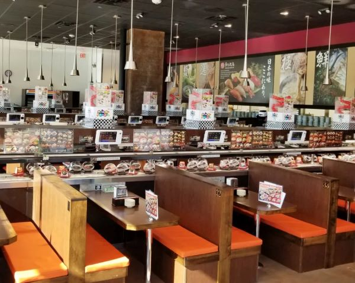
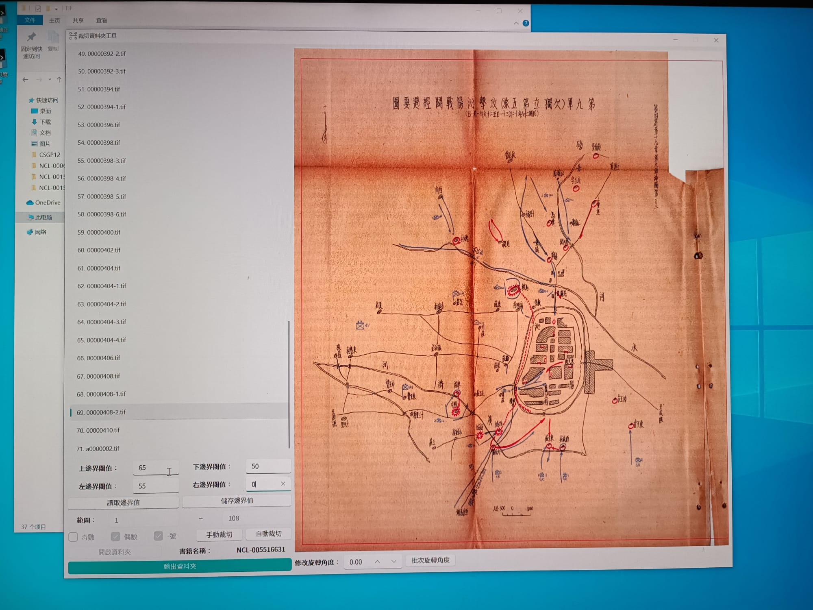

WORK EXPERIENCES
Sushi Maker (Jan 2023 ~ Feb 2023) 📍Kura Sushi
During my time as a Sushi Maker from January 2023 to February 2023, I had the opportunity to immerse myself in the art of sushi crafting. Through meticulous training and hands-on experience, I honed my skills in preparing various types of sushi rolls, from traditional classics to innovative creations. Working in a fast-paced environment, I learned the importance of precision and attention to detail, ensuring each sushi piece was crafted with care and consistency. Additionally, collaborating with the kitchen team allowed me to gain valuable insights into Japanese cuisine, from selecting the freshest ingredients to understanding flavor profiles and presentation techniques. Overall, this role provided me with invaluable experience and deepened my passion for Japanese culinary arts.
Quality Control (June 2023 ~ Aug 2023) 📍Cablesoft
During my tenure as a Quality Control specialist at Cablesoft from June 2023 to August 2023, I took on the crucial responsibility of ensuring the accuracy and fidelity of digital copies of physical books sourced from libraries. Employing meticulous attention to detail, I meticulously reviewed each digitalized copy, verifying its content against the original print material. This involved conducting comprehensive checks for any discrepancies, errors, or inconsistencies, and rectifying them promptly to maintain the integrity of the digital library collection. Additionally, I collaborated closely with digitization teams and library personnel to address any challenges or issues that arose during the process, ensuring seamless and accurate conversion of physical books into digital format. Through this role, I not only honed my quality control skills but also gained a profound appreciation for the preservation and accessibility of knowledge in the digital age.
